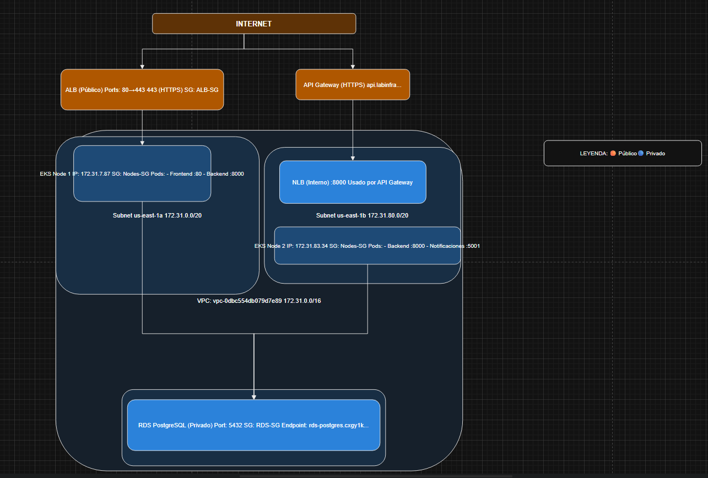

Sistema de Registro de Usuarios en AWS
Aplicación full-stack desarrollada en Python (Django) y PostgreSQL, desplegada en
Amazon EKS con arquitectura de microservicios. Implementa exposición segura mediante
ALB + ACM (HTTPS) para el frontend y API Gateway con dominio personalizado para el backend.
Incluye microservicio independiente en Flask para notificaciones y cumplimiento SSDLC
con pruebas de seguridad automatizadas.
Arquitectura
El sistema está compuesto por tres microservicios dockerizados: un backend Django (API REST),
un microservicio Flask para notificaciones y un frontend estático con Nginx. Todos los
componentes fueron contenerizados, publicados en Amazon ECR y orquestados en Kubernetes (EKS).
El backend se conecta a PostgreSQL gestionado (RDS) con credenciales almacenadas en Kubernetes Secrets.
El frontend se expone públicamente mediante Application Load Balancer (ALB) con terminación TLS y
certificado de AWS Certificate Manager (ACM), mientras que el backend se publica a través de
Network Load Balancer (NLB) consumido por API Gateway con dominio personalizado.
Diagrama de Arquitectura

Diagrama de Red

Tecnologías y Servicios AWS
- Compute & Orquestación: Amazon EKS (Kubernetes), EC2 (nodos), ECR (registro de imágenes)
- Networking: Application Load Balancer (ALB), Network Load Balancer (NLB), API Gateway, VPC, Security Groups
- Seguridad: AWS Certificate Manager (ACM), IAM Roles, Kubernetes Secrets
- Base de Datos: Amazon RDS (PostgreSQL)
- Backend: Python, Django 5.x, Django REST Framework, psycopg2
- Microservicios: Flask, Requests
- DevOps & IaC: Docker, Kubernetes (Deployments, Services, ConfigMaps, Secrets), YAML, kubectl, AWS CLI
- Frontend: HTML, CSS, JavaScript, Nginx
- Seguridad SSDLC: Bandit (SAST), pip-audit (SCA), Grype, AWS ECR scan, OWASP ZAP (DAST)
Repositorios del Proyecto
Características Técnicas Destacadas
- Exposición Segura: Frontend con HTTPS mediante ALB + ACM y redirección automática HTTP→HTTPS (301)
- API Gateway: Backend expuesto mediante API Gateway con dominio personalizado y certificado ACM
- Arquitectura de Microservicios: Comunicación interna vía DNS de Kubernetes (ClusterIP); microservicio de notificaciones accesible solo internamente
- Alta Disponibilidad: Backend con 2 réplicas; probes de liveness y readiness en todos los Pods
- Gestión de Configuración: Variables en ConfigMaps, credenciales en Secrets; imágenes pinneadas por digest SHA256
- Recursos y Límites: Requests y limits de CPU/Memoria definidos en cada Deployment para optimización del scheduler
- Seguridad: RDS privado con acceso restringido por Security Groups; análisis SAST/SCA/DAST y escaneo de imágenes con evidencias documentadas
- Automatización: Runbook en PowerShell para recuperación del entorno y re-registro de targets en ALB tras reinicios
Resumen Técnico
La solución implementa una API REST para registro de usuarios con PostgreSQL gestionado (RDS),
un sistema de notificaciones independiente y contenedores Docker para cada servicio.
La infraestructura está completamente orquestada en Kubernetes (Amazon EKS) con manifests YAML,
imágenes almacenadas en ECR y exposición pública segura mediante ALB (frontend) y API Gateway (backend).
Se aplicaron buenas prácticas de Kubernetes, hardening de recursos y cumplimiento SSDLC con evidencias
de análisis estático (Bandit), composición (pip-audit, Grype), escaneo de imágenes (ECR) y pruebas
dinámicas (OWASP ZAP). El proyecto incluye documentación detallada, diagramas de arquitectura y red,
y scripts de automatización para operación en entornos efímeros.
AgendaOnline: Plataforma de Servicios con Observabilidad en MongoDB Atlas
Plataforma completa de marketplace de servicios profesionales desarrollada en Laravel 10 (backend API)
y Vue 3 (frontend), con arquitectura de microservicios en Amazon EKS. Implementa logging centralizado en
MongoDB Atlas para trazabilidad de accesos y errores, integración con PayPal para pagos online, videollamadas
en tiempo real con LiveKit, base de datos relacional en RDS PostgreSQL, y cumplimiento de SSDLC.
El foco técnico incluyó resolver desafíos de conectividad TLS en contenedores, optimización de build Docker,
integración de múltiples orígenes de datos (SQL + NoSQL) y hardening de entrypoint para migraciones idempotentes.
Arquitectura
Backend Laravel expuesto vía Network Load Balancer (NLB) → API Gateway con dominio personalizado.
Frontend Vue 3 (Vite) desplegado en S3 + CloudFront con certificado ACM. Ambos se conectan a RDS PostgreSQL
para datos operacionales y a MongoDB Atlas (cluster dedicado en Free Tier) para logging de eventos (conexiones,
errores globales, stack traces). Middleware custom captura intentos de login (exitosos/fallidos) registrándolos
en Atlas con contexto (IP, user-agent, email, timestamp). Exception handler global envía excepciones a Atlas sin
interrumpir el flujo de la app. ECR almacena imágenes, GitHub Actions ejecuta tests + SAST, y kubectl orquesta
deployments con Secrets para credenciales de Atlas.
Tecnologías y Servicios
- Compute & Orquestación: Amazon EKS, ECR, EC2
- Networking: NLB, API Gateway, VPC, CloudFront (frontend), Security Groups
- Seguridad: AWS Certificate Manager (ACM), IAM, Kubernetes Secrets
- Bases de Datos: RDS PostgreSQL (aplicación), MongoDB Atlas (logs)
- Backend: Laravel 10, Sanctum (auth), Eloquent ORM, REST API
- Frontend: Vue 3, Vite, Pinia (state), Axios, CSS módular, PWA (Service Worker)
- Pagos: PayPal Checkout SDK integration
- Videollamadas: LiveKit (WebRTC real-time)
- DevOps: Docker, Kubernetes, GitHub Actions (CI/CD), kubectl, AWS CLI
- Logging & Observabilidad: MongoDB PHP Driver, Custom AtlasLogService, middleware de trazabilidad
- Herramientas: mongosh (CLI MongoDB), kubectl, docker-cli, PowerShell scripts
Repositorios del Proyecto
Características Técnicas Destacadas
- Logging Centralizado en Atlas: PHP MongoDB Client directo a Atlas sin intermediarios; captura de login (exitosos/fallidos) vía middleware; excepciones globales capturadas automáticamente
- Trazabilidad Completa: Cada log incluye IP, user-agent, email, ruta, método HTTP, timestamp ISO8601 y contexto custom (user_id, rol, motivo de error)
- Build Optimizado: .dockerignore reduce contexto de 1.59GB → 463KB; GitHub Actions soporta ext-mongodb con --ignore-platform-req
- Resiliencia de Entrypoint: APP_KEY desde env si existe; migraciones opt-in (RUN_MIGRATIONS=true/false); sin CrashLoopBackOff en redeploy
- Gestión de Secrets: MongoDB URI, DB name, collection en Kubernetes Secrets; imágenes pinneadas por digest; Composer lock con versiones fijas
- Autenticación Stateless: Sanctum Bearer tokens; CORS permitido para frontend en CloudFront
- Validación y Seguridad: Requests de Laravel, Password hashing, email unique, roles (cliente/profesional/admin)
- Multi-origen de Datos: Misma app consulta RDS (Eloquent) y MongoDB (AtlasLogService), manteniendo separación de concerns (app data ≠ logs)
Desafíos Resueltos
- TLS/HTTPS Failing en Contenedor: Agregó ca-certificates + pecl install mongodb; actualización de CA en Dockerfile
- Network Access Rejection en Atlas: Identificó EKS egress IP (3.92.26.213), configuró allowlist (hoy 0.0.0.0/0 para desarrollo, recomendación: NAT Gateway + Elastic IP)
- Timeout en Docker Build: Creó .dockerignore excluyendo vendor, .git, storage/logs; reducción de 1.59GB a 463KB
- CrashLoopBackOff en Redeploy: Migraciones redundantes rompían pod; corrigió entrypoint para ser idempotente
- Compatibilidad MongoDB en CI/CD: GitHub Actions no tenía ext-mongodb por defecto; agregó --ignore-platform-req en Composer para tests
Resumen Técnico
Sistema de marketplace SaaS con logging en tiempo real en MongoDB Atlas, combinando la robustez de RDS PostgreSQL
(datos operacionales) con la flexibilidad de MongoDB (logs y eventos). Cada intento de login y excepción no controlada
se registra automáticamente, habilitando debugging rápido y auditoría de accesos. La infraestructura es completamente
dockerizada y orquestada en Kubernetes (EKS), con CI/CD green en GitHub Actions. El desafío de integración multi-cloud
(RDS + MongoDB Atlas) fue resuelto mediante servicios inyectables en Laravel (AtlasLogService) y middleware de bajo acoplamiento.
Propiedad intelectual: arquitectura de logging, manejo de errores graceful, optimización de builds y automatización de
despliegues con redeploy.ps1.